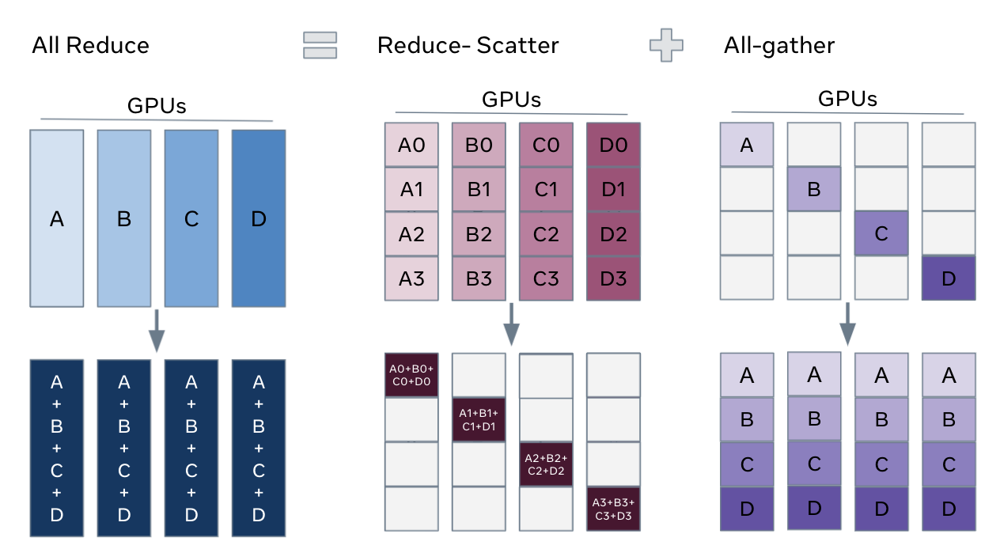
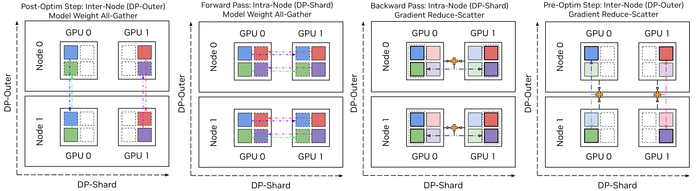

原文：https://docs.nvidia.com/megatron-core/developer-guide/nightly/user-guide/features/megatron_fsdp.html（英文，NVIDIA Megatron Core 开发者指南） 精读日期：2026-10-28 ｜ 主题：并行策略 × 训练框架 ｜ ⭐⭐⭐⭐⭐
Megatron-FSDP 是 NVIDIA 用原生 PyTorch 实现的全分片数据并行库：把 DDP 的全归约拆成梯度归约散射、分布式优化步与参数全收集三段，用 FSDP 单元模块做计算与通信的粒度单位，再以双缓冲、非均匀分片、量化与 NCCL 对称内存把通信开销压到可被计算掩盖的程度。
数据并行（DDP）把模型状态复制到每个 rank，梯度做全归约，显存不随卡数下降。ZeRO 指出这种复制没有必要：优化器状态、梯度、参数三级切分后，单卡模型状态显存随卡数线性下降，这就是 ZeRO-1/2/3。FSDP（即 ZeRO-3）是三级全开的形态，也是 Megatron-FSDP 实现的核心。
Megatron-FSDP 的定位是原生 PyTorch 的高性能 FSDP 实现，与 Megatron-Core、PyTorch DeviceMesh、DTensor、分布式检查点（DCP）、TransformerEngine 深度兼容。它提供三层用法：独立包的 fully_shard API（极少代码启用）、Megatron-LM 的命令行参数、Megatron-Core 的 FullyShardedDataParallel 类 API。
FSDP 的一次迭代可以看作三段：反向后梯度归约散射并累积，分布式优化器用归约后的梯度分片更新分片模型状态，前向/反向前参数全收集解开一小部分权重。用完即释放，是“任意时刻仅一小部分模型状态未分片”这条核心原则的直接落地。

图1：DDP 全归约分解为梯度归约散射、分布式优化步与参数全收集
计算与通信的重叠以 FSDP 单元模块为单位。模型划分为单元模块后，参数按组全收集、梯度按组归约散射；为使预取全收集与计算重叠、梯度归约散射与反向重叠，任意时刻至少需要 2 个单元的未分片权重与梯度显存。模块钩子实现按单元周期的操作：前向之前解分片（含预取后续单元）、前向之后重分片、反向之前解分片、反向之后重分片并归约梯度、状态字典调用时切换为分片 DTensor 主权重。
Megatron-FSDP 的分片策略分主次两层。主分片（内层，节点内）支持 DDP、ZeRO-1（优化器）、ZeRO-2（优化器 + 梯度）、ZeRO-3（优化器 + 梯度 + 参数）；次分片（外层，跨节点）支持 HSDP（外层复制）与 HFSDP（外层再分片优化器状态）。
HFSDP 是理解的重点：它在内层用 ZeRO-3、外层用 ZeRO-1，优化器状态在全部 DP rank 上全分片；检查点保存与加载全分片参数，优化器状态在全分片参数上初始化；检查点或优化后的首次前向把全分片权重全收集为部分分片权重，优化前的最后一次反向把部分分片梯度归约散射为全分片梯度；其余时间 FSDP 在部分分片权重与累积梯度上执行，于是昂贵的跨节点集合通信可以推迟到优化步。HFSDP 的显存画像是 FSDP（优化器状态）与 HSDP（梯度与权重）的混合，也可以理解为 ZeRO-1 与 ZeRO-3 的组合。

图2：HFSDP 在内外两层分别分片优化器状态，节点内用 ZeRO-3、节点间用 ZeRO-1
与模型并行组合时，FSDP 分片总是最后执行，因为 FSDP 集合通信在计算前后立即解分片与重分片；FSDP 机制建立在张量并行与专家并行的跨步分片之上。DeviceMesh 描述跨设备的通信拓扑：稠密模块用数据并行 + 张量并行 + 上下文并行维度，MoE 模块用数据并行 + 张量并行 + 专家并行维度，数据并行维度用于 FSDP。
默认分配器基于 Tensor._typed_storage()._resize_(bytes)，即时分配与释放未分片参数与梯度显存，不依赖 CUDACachingAllocator；但修改缓冲区底层存储与 NCCL 对称注册、CUDA 图捕获不兼容。双缓冲把 2 个持久分配的缓冲区按交替模式分配给 FSDP 单元，硬性限制参数与梯度缓冲区开销，并确保任意时刻并发计算或通信的单元不超过 2 个；初始化后不再分配显存，碎片减少。
双缓冲要求模型按深度对称（偶数与奇数索引单元尺寸相同）；不对称单元回退到 _resize_ 分配器。Nemotron 这类 Transformer + Mamba + MoE 混合架构尺寸与数据类型都不对称，MaxPool 取全部单元的最大值构造对称缓冲池，再做双缓冲。
PyTorch DTensor 默认按参数均匀分片；Megatron-FSDP 用与 FSDP 单元关联的一组展平参数的非均匀 DTensor 分片：连续通信缓冲区的切片视图直接分配给单元参数，无需 COPY 操作准备缓冲区。收益有二：NCCL 调用更少（只有 dtype 或拓扑不同的单元才分开调用），扁平缓冲区按设计连续，支持分组 GEMM 这类要求连续内存的优化算子。代价是同一参数在不同 rank 上形状可能完全不同，整个参数被分到其他 rank 时本地张量为空。
连续性只是高性能算子的一半要求，另一半是局部性。dim=0 分片计算单元内全部参数 p.shape[1:] 的最小公倍数（LCM），把未分片缓冲区填充到最接近的 DP × LCM 倍数，形成 DP-LCM 分区，确保分片边界不切开 dim=0 各坐标的数据块；块量化（MXFP8、NVFP4 的缩放因子计算）这类需要块局部性的优化因此仍可工作。
量化参数每个优化步更新：TransformerEngine 处理激活量化，Megatron-FSDP 对量化权重做分片与全收集；行方向（前向）与列方向（反向）数据对 MXFP8 这类不可转置的一维量化方案都要管理。分片量化进一步压缩通信：不通信主权重，只通信缩放因子——先算本地绝对极值（按张量或按块，非本地数据补零），再全局全归约极值推导缩放因子，最后本地量化分片主权重并装入计算权重缓冲区。
混合精度由 MixedPrecisionPolicy 封装三处：主权重精度（优化与检查点，--fp8-param-gather 必需，默认 FP32）、主梯度精度（累积，默认 auto）、梯度通信精度（归约，默认 auto；NCCL 对称注册下低精度梯度可在在线以 FP32 归约，例如 BF16 通信配 FP32 归约）。
NCCL 用户缓冲区注册（UBR）告知 NCCL 哪些 PyTorch 张量直接作为集合通信的输入与目标，省掉集合通信输入送 NCCL 缓冲区、输出送 PyTorch 缓冲区的 COPY，端到端零拷贝。NVLink 域上的对称分配与注册让共享相同虚拟地址的缓冲区受益于优化集合通信：对称算子把单个通信算子的 SM 占用降到 1；NVSwitch SHARP 把归约与聚合卸载到交换机硬件（按 NVL、IB 或 NVL + IB 域用 1-6 个 SM）；拷贝引擎（CE）集合通信用拷贝引擎而非 SM 做全收集；高精度归约用 FP32 累加器实现 FP32 归约、BF16 通信。
pip install megatron-fsdp + fully_shard_model / fully_shard_optimizer，适合已有训练循环的接入。--use-megatron-fsdp + --data-parallel-sharding-strategy {no_shard, optim, optim_grads, optim_grads_params} + --ckpt-format fsdp_dtensor；推荐配置含元设备初始化、按 token 损失、BF16 梯度归约、NCCL 用户缓冲区与双缓冲。fsdp_dtensor 格式基于 Torch DCP；注意 fsdp_dtensor 检查点的默认严格性类似 raise_unexpected（缺失权重会报错而非静默初始化），且参数名带 module. 前缀；N 维并行检查点转换需先导出参数组映射。